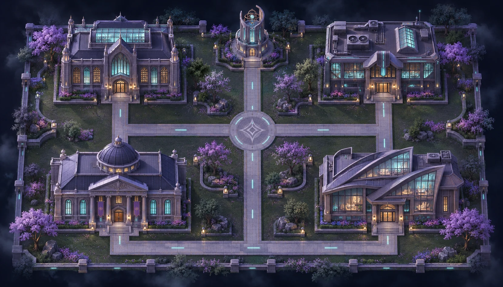

Yun-Ta Hsieh
Efficient AI, multimodal systems, and a little curiosity.

WASDor arrow keys to move
Click a destination to enter · or walk to a doorwayTap any building to enter.
EXPLORE THE CAMPUS
Choose your next stop.
Four places to explore. Select a building, or take a walk along the paths.
ABOUT
A little about me
I’m Yun-Ta Hsieh, a researcher working on efficient AI, multimodal systems, and agents that interact with the world.
I am pursuing my M.A.S. in Computer Science at the University of Pennsylvania. At The Ohio State University, I work with Prof. Mi Zhang in the AIoT and Machine Learning Systems Lab.
My background in architecture and digital fabrication shapes how I approach models, interfaces, and real-world constraints.
CONTACT
Get in touch
Based in Ann Arbor, MI. Have a shared interest or an idea to explore? I’d love to hear from you.
yunta@engineering.upenn.edu